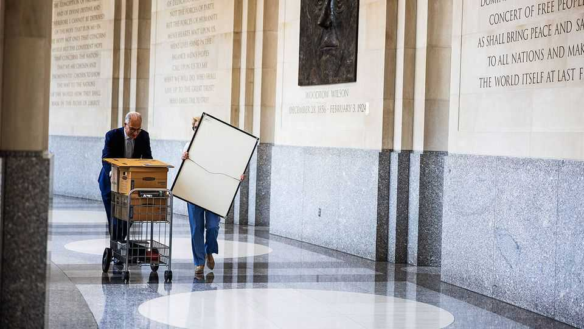

How Donald Trump remade America’s government
DOGE was a huge missed opportunity

Oct 15th 2026
It was during the early months of the pandemic, and Donald Trump was vexed. Experts had told him that hydroxychloroquine, a malaria drug, was no good as a treatment for covid-19. He summoned Francis Collins, the head of the National Institutes of Health, to put him straight. The president had compelling anecdotal evidence. “Get me Jack Nicklaus!” he shouted to a flunkey. Mr Nicklaus was an 80-year-old ex-professional golfer. He had caught covid, taken hydroxychloroquine and recovered, he told Dr Collins. “There, you see!” said Mr Trump. “You see!”
Dr Collins, who discovered the gene for cystic fibrosis, tried to respond tactfully. No disrespect to Mr Nicklaus, arguably the greatest golfer in history, but most people who contract the virus get better. Only a double-blind randomised controlled trial can reveal whether a drug actually works, and such trials had shown that this one did not. Mr Trump never summoned Dr Collins for a private meeting again.
To govern well requires finding accurate information and analysing it rationally. Mr Trump’s scorn for such principles has increasingly infected the federal government. During his first term, Dr Collins merely had to endure a nutty lecture from Robert F. Kennedy junior about how vaccines cause autism. In his second term RFK junior is the health secretary, Dr Collins was pushed out and measles is spreading among unvaccinated American kids.
In “Blockers” Michael Lewis tells the stories of federal workers who tried to resist Mr Trump’s assault on the bureaucracy. Most are low-key, diligent and startled to be told by Elon Musk and his Department of Government Efficiency (DOGE) that their offices are hotbeds of fraud, waste and wokery.
Mr Lewis is a journalist who spins technical topics into entertaining tales; previous works have taken on Wall Street (“Liar’s Poker”) and data and baseball (“Moneyball”). He concedes that waste in government is a real problem. Employees are too hard to sack. He tells the story of Maxine, an air-force employee who parked close to a fire hydrant, was asked to move, refused, accidentally reversed into a cop and drove off. The ensuing car chase shut down an air base during a war. When she was fired, she filed a grievance and won. When she eventually returned to work, she found that two higher-ranking officers were doing her job in addition to their own. When she found out they were paid more than her, she claimed discrimination (she was black) and sued for a pay rise.
Reform was—and is—needed. Unfortunately, Mr Trump’s hatchet men did not understand the machine they were trying to re-engineer. They “thought in stereotypes”, writes Mr Lewis. The typical DOGE person was a 25-year-old techie “dying to breathe the same air as Elon Musk and only just now grokking the fact that the United States government had three branches”. They were mainly “white guys easily bent out of shape by…the idea of people who were not white guys having unfair advantages”. They had “a simple picture in their heads of ‘the bureaucrat’, and that person looked a lot like Maxine”.
So DOGE started slashing. It attempted to fire all the probationary staff—the recent hires who were mostly either young or had urgently needed skills. Permanent staff were offered hefty payouts to quit. Many who could easily find other jobs accepted; the less capable ones stayed. A return-to-the-office rule was enforced mindlessly. DOGE killed a study of how wildfires spread into suburbs, because the only computers powerful enough for its modelling were not in a government office.
DOGE failed to make the state smaller, despite Mr Musk’s ambitious promises. But it did make it dumber. Colette Delawalla, a clinical psychologist, was told that her application for a research grant would fail because it contained the word “translate” (which includes “trans”) and “bias” (an essential term in statistics that is also used in complaints about racism).
It made it crueller, too. Mr Musk was outraged that the United States Institute of Peace was paying a former member of the Taliban. The man was supplying vital intelligence. After Mr Musk outed him on X, the informant’s family was rounded up and tortured. The Trump revolution also made government less accountable, by suppressing evidence that his policies were hurting people. After he cut food subsidies for the poor, a survey measuring hunger was scrapped.
Most disturbing of all, in Mr Lewis’s telling, Mr Musk’s tech-savvy footsoldiers saw the law as an obstacle to work round, rather than a guide. Mr Lewis tells the story of Kathleen Walters, the chief privacy officer at the Internal Revenue Service (IRS). DOGE had sent an email to every federal employee ordering them, on pain of dismissal, to each list five things they had accomplished in the previous week. Since violating taxpayers’ privacy is a crime, many at the IRS risked prison if they responded—and the sack if they didn’t.
Ms Walters locked horns with Gavin Kliger, a young hoodie-clad DOGE staffer. Mr Kliger showed up at the IRS demanding access to all its systems and taxpayer data. This was plainly illegal. Even worse was an effort by a Trump appointee to make the IRS share with the immigration authorities personal data about millions of illegal immigrants who had filed tax returns.
The IRS had spent decades reassuring such people that, if they wanted to pay taxes and build a record of civic virtue that might one day help them win legal status, their privacy would be respected. Mr Trump wanted their addresses so he could shackle and deport them. An acting IRS commissioner, who had been in the job for only an hour, sent out the request on a Friday night, doing an end run around the woman whose job it was to say no.
Alerted by a colleague, Ms Walters called the acting commissioner from outside a pizza restaurant, and warned her that the plan was unlawful. Two months later, after having spent an evening hiding from Mr Kliger in a darkened conference room, Ms Walters quit. Later, in Texas, teams of ICE agents showed up in a Latino neighbourhood knowing exactly which doors to jimmy open. A court ruled that the IRS data-sharing with ICE was illegal, but for many of its victims—and for trust in the system—it was too late. ■